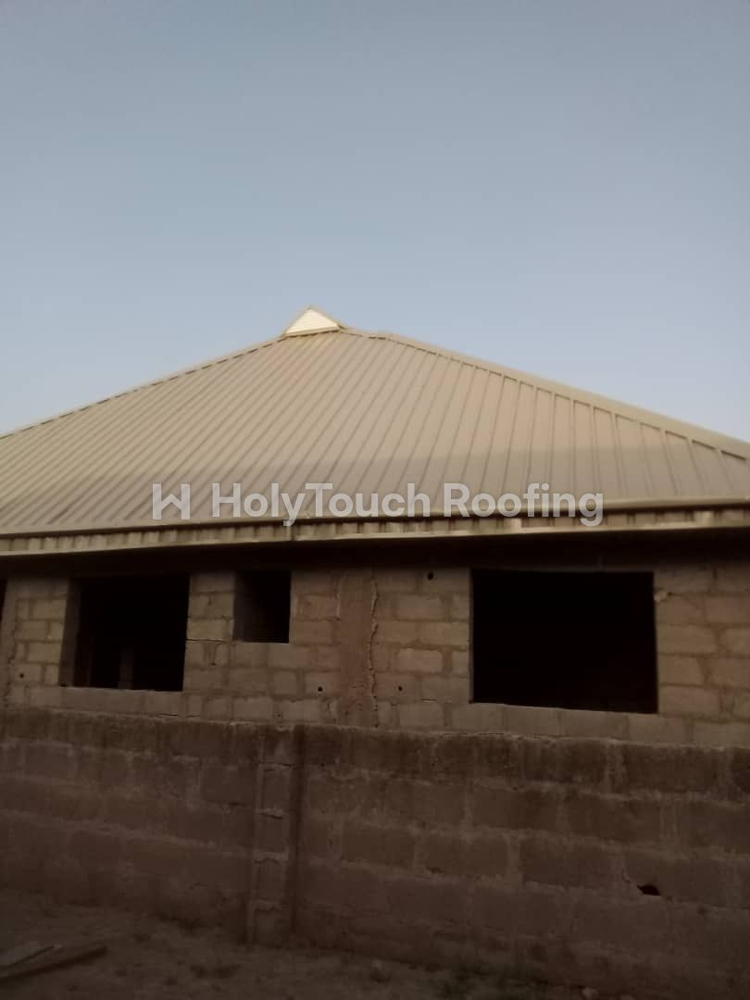

How to spot low gauge aluminium roofing sheets before you pay
How to check that the 0.45mm or 0.55mm roofing sheet you are paying for is really that thickness, what market and caliper grade mean, and the warning signs of a bad deal.

Thin sheets sold as thick ones are one of the most common complaints we hear. The sheet looks fine on the day, but a few years later it dents, rattles in the wind or starts to leak. By then the seller is gone. A few minutes of checking at purchase can save you a new roof.
What "gauge" means
When people say gauge, they mean thickness, measured in millimetres: 0.40mm, 0.45mm, 0.55mm and so on. The higher the number, the thicker and stronger the sheet. The difference between 0.45mm and 0.55mm is only a tenth of a millimetre, which is why it's so easy to cheat and so hard to see by eye.
Market grade vs caliper grade
Lagos dealers openly sell two grades. Caliper grade (also called full gauge) is close to the thickness written on it. Market grade is cheaper and can measure thinner than its label. Both are sold legally, but you should know which one you're getting and pay the right price for it. If a "0.55mm" is far cheaper than everyone else's, it's probably market grade, or thinner still.
How to check thickness yourself
- Bring a micrometer or digital vernier caliper. They're cheap to buy and some roofers will lend you one.
- Measure the bare edge of the sheet in several places, not just one. The paint adds a little thickness, so measure where you can.
- Measure more than one sheet from the same batch.
- Compare with what's written on the receipt and on the sheet itself.
Warning signs
- A price much lower than other sellers for the "same" thickness.
- The seller won't let you measure, or won't write the thickness and grade on the receipt.
- Sheets that bend easily in the hand or dent when you press with a thumb.
- No markings at all on the sheets.
- Pressure to pay and load quickly.
The legal minimum
The Standards Organisation of Nigeria (SON) sets the minimum thickness for aluminium roofing sheets at 0.4mm under the Nigeria Industrial Standard NIS 488. SON has seized sheets below this thickness from sellers in the past. Anything thinner than 0.40mm should not be on a roof at all.
How we handle it
When we supply materials, the quotation states the sheet type, the thickness and the quantity, item by item. When we do installation only, we check the sheets you've bought and tell you before we start if anything looks wrong. If you want a second opinion on sheets you've been offered, send us pictures and the seller's quotation on WhatsApp.
Questions people ask
How can I know original aluminium roofing sheets?
Measure the thickness with a micrometer or vernier caliper, ask whether it is market or caliper grade, check for markings, and get the thickness and grade written on the receipt.
What is the minimum thickness for aluminium roofing sheets in Nigeria?
0.40mm, under the Standards Organisation of Nigeria's NIS 488 standard.
Is market grade aluminium bad?
Not always. It is cheaper and can be fine for some jobs, as long as you know what you're buying and it isn't below the thickness you need.